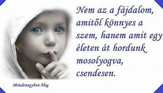

„Ne félj, nem ítéllek el!” hétvége
ABORTUSZ, MAGZATVESZTÉS lelki fájdalmak gyógyulása

Abortusz, vetélés, a gyermek halva születése, … mind olyan mély seb, ami akadályozhatja, hogy derűs, kiegyensúlyozott életet élj. Lehet, hogy friss, lehet, hogy már régen történt, de elő - előtör és nem találod a lelki békédet.
Tapasztalod a következményeit: önértékelési válság, bűntudat, harag, kapcsolati nehézségek, depresszió…
Egy ideig el lehet némítani a szív hangját, ez akár évtizedekig is eltarthat, de valamilyen krízis az életedben előhozza az elfeledettnek gondolt traumát.
Ne cipeld tovább ezt a terhet!
Az elmúlt évtized alatt sokak élete megváltozott ezeken a sorstársak körében eltöltött hétvégéken.
Hétvégénk lelki ajándékai
A lelkigyakorlat végén megkérdezzük a résztvevőket, mi változott meg a szívükben a három nap alatt?
Hölgyek, férfiak őszintén válaszoltak. Egy 19 éves fiatal résztvevőnk hegedült. (3 perc 54 mp)
Meghallgathatók a hétvége lelki ajándékai.
Segítő testvéreinkkel együtt Téged is szeretettel várunk:
Mária & Ferenc